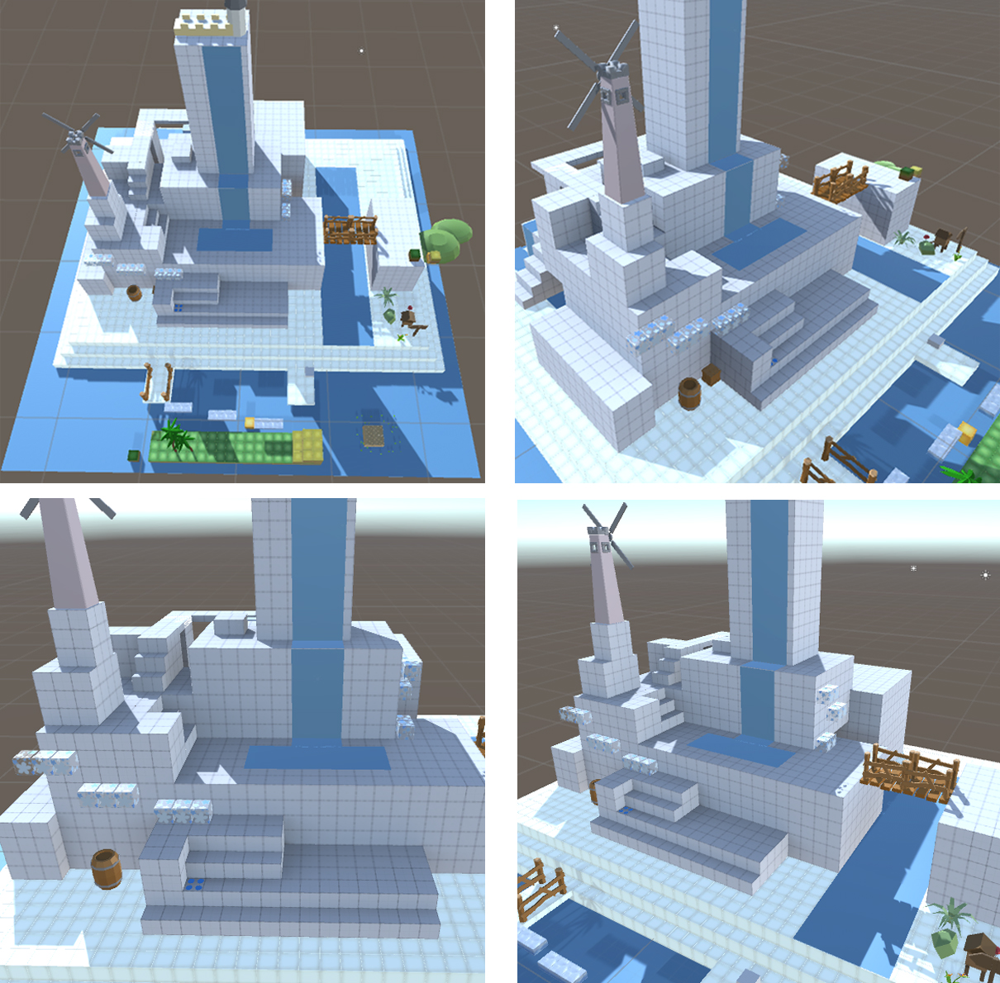
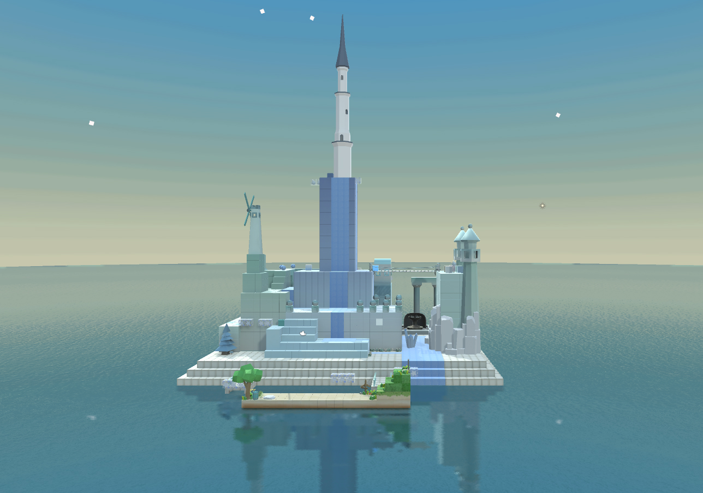
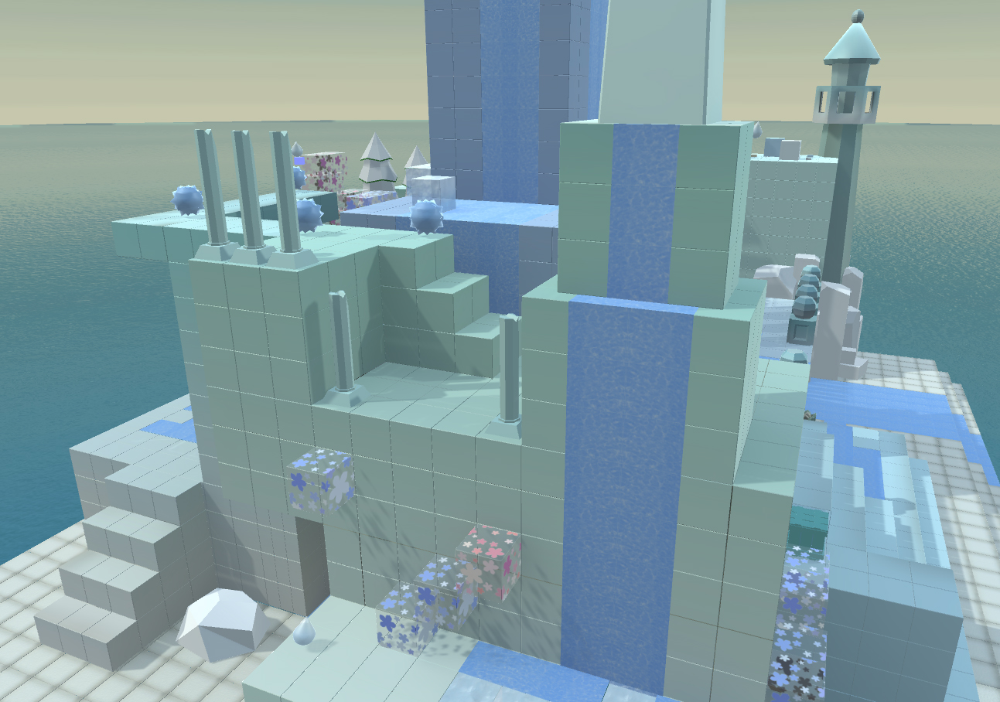
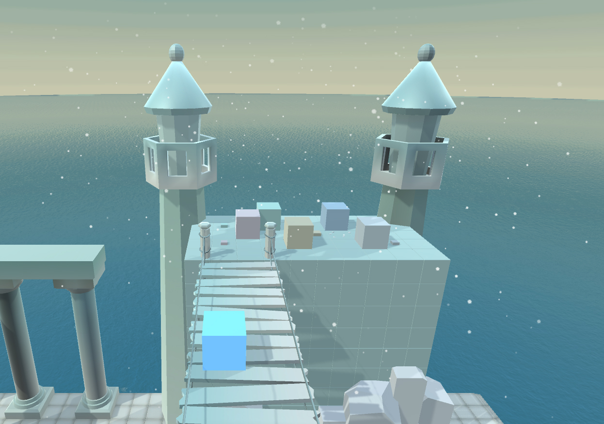

Type: Video game, Emotion, Platform
Team Member: Ruolan Tang, Yuanyuan Ding, Yuxian Deng, Yueying Su, Chuankang Li, Zhitao Zhao, Lian Lian, Jin Lin
Description: The protagonist who had lost all emotions would travel through all six sides of the cubic world to retrieve its lost emotions. Every side of the cube is a kingdom with a dominating color representing a specific type of emotion. I was responsible for the blue-colored kingdom, which responds to sadness. We also made a cubic controller using Arduino to replace mouse and keyboard for game interaction. Created for the course Computer Game Programming.
My contributions: Game design, game art and some scripting work.
Tools: Unity3D, Maya, Arduino
   
Game video: